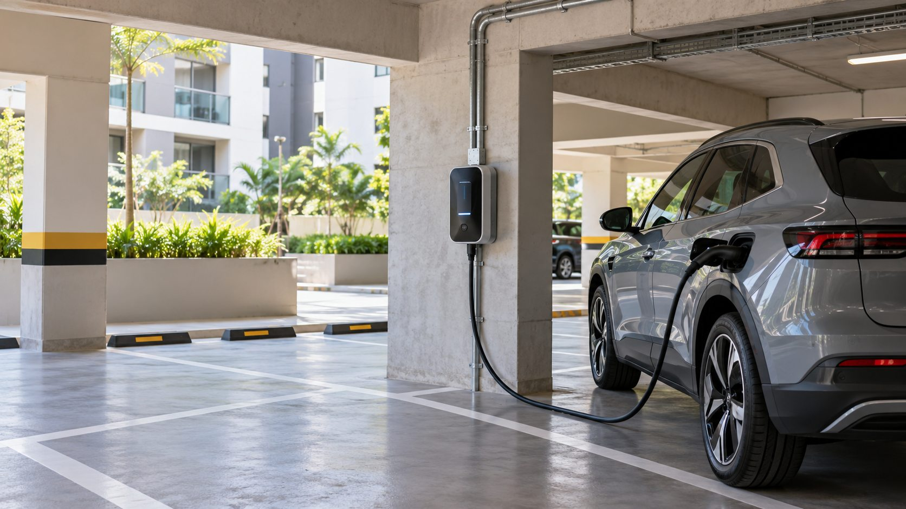

- WX2 Engenharia: laudos elétricos, SPDA e estudos de viabilidade para condomínios
Um carregador de carro elétrico não deve ser tratado como uma tomada comum. Ele pode aumentar a demanda do condomínio e exigir mudanças na entrada, nos quadros, nos cabos ou na forma de distribuir a energia.
Também podemos preparar orientações para pontos de recarga, circuitos, proteções, passagem de cabos, locais de instalação, manutenção e documentos que o morador deve apresentar.
